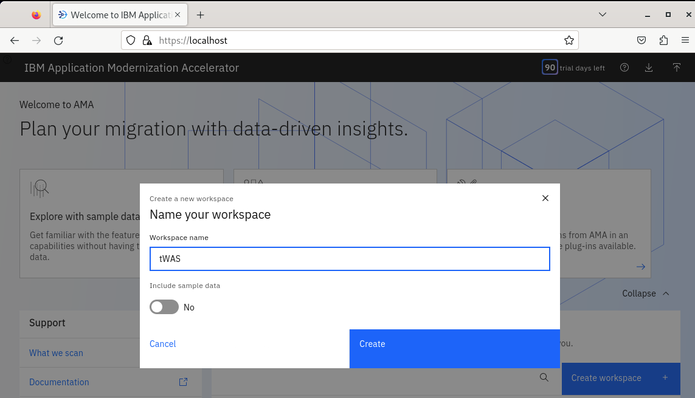
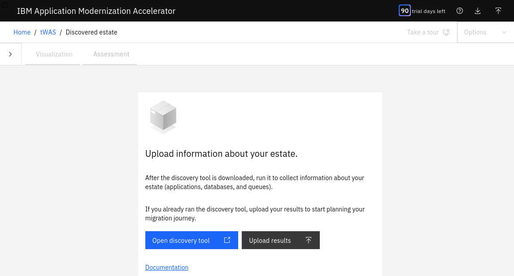
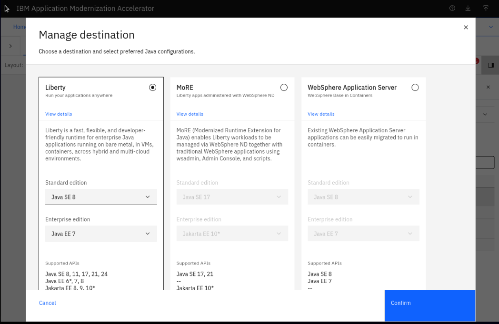

A qui s'adresse ce lab ?
Aux entreprises souhaitant moderniser leur patrimoine Java existant, qu'il s'agisse :
- d'applications Java EE historiques (Java EE 8 ou antérieur),
- exécutées sur des serveurs traditionnels comme :
- IBM WebSphere Application Server Version 6.1, ou ultérieure
- WebLogic Version 6.x+
- Apache Tomcat Version 6.0 (et ultérieure)
- Red Hat Version JBoss 4.x+.
Ce lab démontre comment les outils IBM automatisent leur transformation vers des architectures modernes.
Pourquoi moderniser ?
Les applications Java EE Legacy ont été développées il y a plusieurs années, souvent basés sur des technologies anciennes (Java EE, serveurs d'applications monolithiques, frameworks obsolètes). Ces applications, bien que fonctionnelles, présentent plusieurs défis :
- Maintenance coûteuse : Code difficile à comprendre et à modifier
- Performance limitée : Architecture non optimisée pour le cloud
- Sécurité : Vulnérabilités liées aux versions obsolètes
- Scalabilité réduite : Difficulté à s'adapter aux charges variables
- Intégration complexe : Incompatibilité avec les technologies modernes
Quels outils IBM pour les moderniser ?
Dans ce tutoriel, nous utiliserons deux outils puissants d'IBM :
🔍 IBM Application Modernization Accelerator (AMA) - un outil qui analyse le code source d'applications Java monolithiques existantes pour vous aider à évaluer la complexité de la migration et faciliter la refactorisation.
- Analyse automatique de l'état de vos apps existantes
- Identifie les problèmes de compatibilité et dépendances
- Identifie les applications clés qui doivent être remplacées ou mises à niveau
- Estimation de l'effort pour résoudre les problèmes de migration
- Propose des recommandations de modernisation
- Génère un paquet de migration pour aider à la conteneurisation et au déploiement
🤖 IBM Bob - an AI-augmented SDLC (Software Development Lifecycle) partner - outil d'IA agentique qui gère tout le cycle de vie du logiciel - il ne s'agit pas d'un simple Assistant IA tel un partenaire de travail. Il peut décomposer des tâches, écrire le code, lancer des tests, rédiger la documentation et gérer les déploiements. Modèles hybrides : Il s'appuie sur une combinaison de modèles d'IA; les modèles Granite d'IBM, mais aussi d'autres modèles pour utiliser le plus adapté à chaque étape de votre projet.
Couplé d'un add-on Java Premium Package, Bob
- Assistant IA conversationnel pour la modernisation
- Aide à la refactorisation du code Java
- Génère automatiquement du code modernisé
- Accompagne les développeurs dans les meilleures pratiques
- Intégré directement dans votre IDE (VS Code)
Ce que vous allez apprendre dans ce lab:
- Analyser une application Java Legacy avec IBM AMA
- Interpréter les rapports de modernisation
- Utiliser IBM Bob pour refactoriser du code
- Appliquer les recommandations de modernisation
- Migrer vers des frameworks modernes (Spring Boot, Quarkus)
Ce dont vous avez besoin:
- Java JDK 11 ou supérieur installé
- IBM Bob installé
- Un accès à une VM TechZone où l'on accède à IBM Application Modernization Accelerator
Outil utilisé : IBM Application Modernization Accelerator (AMA)
Dans cette étape, vous allez analyser une application existante afin d'évaluer sa complexité et l'effort nécessaire pour la migrer vers un serveur d'application léger WebSphere Liberty.
1. Démarrer AMA et créer un workspace
Connectez-vous sur Application Modernization Accelerator (AMA) en ouvrant ce lien depuis votre navigateur:
https://localhost:443 A MODIFIER
Vous arrivez sur la page d'accueil d'AMA, où l'on peut y voir nos workspaces - il s'agit là d'un espace de travail qui regroupe les applications analysées, avec leurs dépendances (bases de données, messaging, etc.) et les résultats d'analyse et rapports.
💡 Objectif : centraliser toutes les informations nécessaires pour planifier une migration. Un workspace correspond généralement à un périmètre applicatif (ex : un environnement WebSphere existant).

Cliquez sur Create workspace, entrez le nom tWAS suivi de votre nom (car nous sommes sur un environnement partagé). Par exemple, tWAS_Dupont
Puis cliquez sur Create.

2. Importer les résultats d'analyse
Cliquez sur Upload results puis sélectionnez le fichier :
Dmgr01.zip
💡 Ce fichier .zip est issu d'une collecte de données réalisée sur votre environnement WebSphere existant (via un outil de découverte). Il contient notamment la configuration des serveurs, les applications déployées et les dépendances techniques (JDBC, JMS, etc.).

Choisissez Liberty comme cible de migration puis cliquez sur Confirm.

3. Visualiser les applications
Dans le panneau Visualization, vous pouvez voir :
- 3 applications détectées
- Une dépendance entre l'application WebSphereBank et la base de données BANKDB

Il s'agit là d'un exemple simplifié pour vous présenter AMA, mais dans la réalité un workspace typique ressemblerait plutôt à celà :

💡 Dans un environnement réel, cette vue permet d'identifier les dépendances entre applications (bases de données, files de messages, etc.) afin de construire une stratégie de migration cohérente.
4. Évaluer la complexité et l'effort de migration
Passez dans l'onglet Assessment.
AMA fournit une estimation de l'effort pour moderniser les applications vers Liberty avec Java 8 :
- Effort total estimé : 15,5 jours
Détail par application :
- modresorts (simple)
- Aucun problème détecté
- Aucune modification nécessaire
- Compatible Liberty directement
- simple-pharmacy (modéré)
- 2 problèmes identifiés
- Corrections partiellement automatisables
- Effort estimé pour un développeur expérimenté : 1,5 jour
- WebSphereBank (complexe)
- 3 problèmes nécessitant des corrections manuelles
- Effort estimé pour un développeur expérimenté : 14,5 jours

5. Analyser une application en détail
Cliquez sur simple-pharmacy_war.ear pour explorer les actions nécessaires recommandées par AMA.
Sur la gauche, le menu permet d'explorer en détail :
- Complexity score : vue détaillée des problèmes (déplier pour voir les détails)
- Required code changes : recommandations de correction (recettes)
- Issues : estimation détaillée des efforts

Cliquez sur Complexity score pour afficher plus de détails sur les deux problèmes détectés par AMA. Vous devez cliquer sur l'icône en forme de flèche pour voir les détails.

Cliquez sur Required code changes pour voir la solution permettant de corriger l'un des problèmes.

Cliquez sur Issues pour voir les estimations d'effort plus en détail.

6. Consulter les rapports
Sur la gauche, AMA propose plusieurs rapports utiles :
- Inventory report : vue globale des composants
- Technology report : technologies utilisées
- Analysis report : recommandations de modernisation
💡 Ces rapports permettent de mieux comprendre les impacts de la migration. Vous pouvez également exporter les rapports pour les partager avec vos équipes de développement.
7. Générer le plan de migration
Remontez en haut de la page et cliquez sur View migration plan.
Le plan de migration regroupe tous les éléments nécessaires pour moderniser l'application :
- les artefacts de déploiement (ex :
server.xml,Containerfile) - les rapports d'analyse (inventory, technology, analysis)
- les recommandations de correction
- les dépendances identifiées
Cliquez sur Download pour récupérer le plan (fichier .zip).

8. Conclusion
Le plan de migration est un livrable central qui sert de point de départ à la modernisation. Il permet de :
- Industrialiser la migration en standardisant les artefacts et les étapes à appliquer
- Guider les développeurs avec des instructions concrètes pour corriger les incompatibilités
- Partager une vision commune entre architectes, développeurs et équipes DevOps
Quel lien avec IBM Bob ? Ce plan n'est pas seulement informatif, il est conçu pour être utilisé dans les étapes suivantes de la modernisation.
Concrètement, il va servir à :
- Générer automatiquement les pipelines de build et déploiement
- Construire des images conteneurisées (via le Containerfile)
- Configurer les serveurs Liberty (server.xml)
- Accélérer la transformation vers un modèle cloud / Kubernetes
💡 En résumé : AMA analyse et produit un plan, puis IBM Bob exploite ce plan pour automatiser la transformation et le déploiement.
À l'issue de cette étape, vous disposez :
- d'un fichier .zip contenant tous les éléments de migration
- d'une base prête à être utilisée dans les outils d'automatisation comme IBM Bob.
Code exemple
print("Hello Codelab!")```